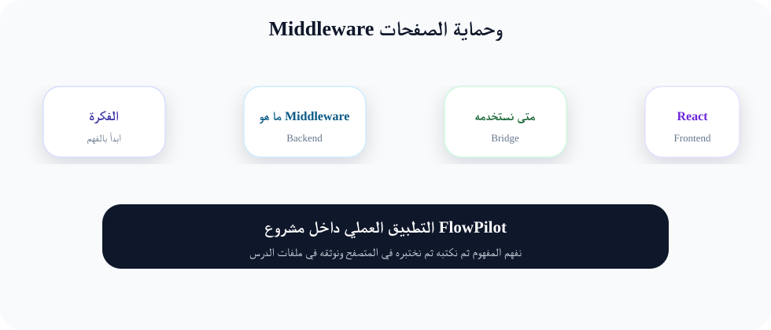
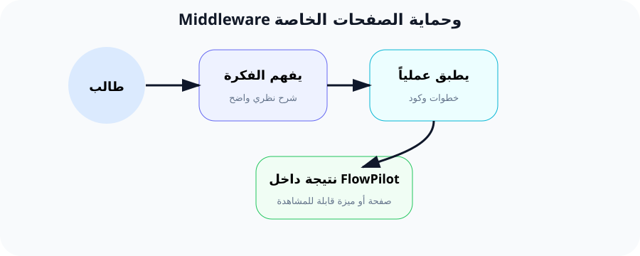

Middleware: كيف نمنع الغرباء من دخول الصفحات الخاصة؟
"Middleware هو البواب الإلكتروني الذي يفحص كل طلب قبل أن يدخل إلى التطبيق."
1. ما هو الـ Middleware؟
Middleware (البرمجية الوسيطة) هي طبقة برمجية تقف بين "طلب المستخدم" (Request) و "التطبيق" (Application). وظيفتها الأساسية هي الفحص والتصفية. كل طلب يأتي من المتصفح يجب أن يمر عبر الـ Middleware قبل أن يصل إلى الـ Controller.
تخيل أنك تدخل إلى مبنى حكومي. هناك العديد من نقاط التفتيش: عند البوابة الرئيسية، عند مدخل الطابق، عند باب المكتب. كل نقطة تفتيش هذه هي "Middleware". تتحقق من شيء معين قبل أن تسمح لك بالمرور إلى المستوى التالي.
🔍 كيف يعمل Middleware في Laravel؟
1. المتصفح يرسل طلب (Request) إلى الخادم.
2. الطلب يمر عبر سلسلة من Middleware (كل واحد يفحص شيئاً).
3. إذا فشل الفحص، يرد الطلب برسالة خطأ أو يعيد التوجيه.
4. إذا نجح الفحص، يمر الطلب إلى الـ Controller المناسب.
5. الـ Controller ينفذ العملية ويرسل الرد (Response).
2. Middleware الجاهزة: auth و guest
Laravel يأتي مع مجموعة من Middleware جاهزة. الأكثر استخداماً هما auth و guest.
🔒 Middleware 'auth'
يستخدم لمنع الزوار غير المسجلين من الوصول إلى صفحات معينة. إذا حاول زائر فتح صفحة محمية، يتم تحويله إلى صفحة تسجيل الدخول.
🚶 Middleware 'guest'
العكس تماماً. يسمح فقط للزوار غير المسجلين برؤية الصفحة. إذا كان المستخدم مسجلاً، يتم تحويله إلى لوحة التحكم.
🔍 شرح الكود:
- middleware(['auth']): يحمي المسار. المستخدم غير المسجل يُعاد توجيهه إلى
route('login'). - middleware(['guest']): يسمح فقط للزوار. المستخدم المسجل يُعاد توجيهه إلى
route('dashboard'). - ->group(function() {...}): يجمع مسارات متعددة تحت نفس الـ Middleware.
3. إنشاء Middleware مخصص
أحياناً نحتاج Middleware يفحص شيئاً خاصاً بتطبيقنا. مثلاً، هل المستخدم لديه وصول إلى هذا المشروع؟ هل حسابه موثق (Verified)؟ لإنشاء Middleware مخصص:
الأمر ينشئ ملف app/Http/Middleware/CheckProjectAccess.php. دعنا نكتب منطق الفحص:
🔍 شرح الكود سطراً سطراً:
- handle(Request $request, Closure $next): الدالة الرئيسية في أي Middleware. تستقبل الطلب ودالة
$nextالتي تمرر الطلب للمرحلة التالية. - $request->user(): تجلب المستخدم المسجل حالياً (أو null إذا لم يسجل).
- $request->route('project'): تجلب قيمة معامل المسار (Route Parameter). مثلاً في
/projects/{project}تجلب رقم المشروع. - abort(404): توقف التنفيذ وترسل صفحة خطأ 404 (غير موجود).
- abort(403): توقف التنفيذ وترسل خطأ 403 (ممنوع - Forbidden).
- return $next($request): تمرر الطلب إلى الـ Middleware التالي في السلسلة أو إلى الـ Controller.
4. تسجيل Middleware في Kernel
بعد إنشاء Middleware، يجب تسجيله في app/Http/Kernel.php حتى يعرفه Laravel. هناك ثلاث طرق للتسجيل:
🔍 شرح طرق التسجيل الثلاث:
- $middleware (Global): ينفذ على كل طلب يصل إلى التطبيق (مثل TrustProxies, HandleCors).
- $middlewareGroups: مجموعات مسماة. مجموعة
webتنفذ على كل طلبات الويب (التي تمر عبر routes/web.php). - $middlewareAliases: أسماء مختصرة. نضيف
'check.project'لنتمكن من استخدامه في المسارات:->middleware(['check.project']).
5. تطبيق Middleware على المسارات
بعد التسجيل، يمكننا استخدام الاسم المختصر في المسارات بعدة طرق:
🔍 ملاحظة: يمكنك تطبيق أكثر من Middleware على نفس المسار بفصلها بفواصل في المصفوفة: ['auth', 'check.project', 'verified'].
6. Middleware مع Parameters
أحياناً نريد Middleware مرن يمكنه قبول معاملات. مثلاً Middleware يتحقق من دور المستخدم (role) ويمكننا تحديد الأدوار المسموح بها:
🔍 شرح: 'role:admin,super-admin' يعني استخدم Middleware CheckRole وأرسل له المعاملات admin و super-admin كأدوار مسموح بها.
🎯 مثال من الواقع: البواب الإلكتروني للمطار
تخيل أنك مسافر إلى الخارج. تمر بعدة نقاط تفتيش:
نقطة 1 - جواز السفر (Middleware 'auth'): يتحقق من هويتك. هل أنت شخص حقيقي مسجل في النظام؟
نقطة 2 - التأشيرة (Middleware 'check.project'): يتحقق من أن لديك إذن للدخول إلى هذا البلد المحدد. في FlowPilot، هل لديك صلاحية لدخول هذا المشروع؟
نقطة 3 - التصوير الأمني (Middleware 'verified'): يتحقق من أن وجهك يطابق الصورة في الجواز. في FlowPilot، هل حسابك موثق (Email Verified)؟
إذا فشلت في أي نقطة، لن تسمح لك بالمرور إلى الطائرة (الـ Controller). هذه هي قوة الـ Middleware!
7. FlowPilot: Verified + Project Access Middleware
في FlowPilot، نريد طبقتين من الحماية:
1. CheckProjectAccess: يتحقق من أن المستخدم يملك صلاحية الدخول للمشروع المطلوب.
2. verified: يتحقق من أن البريد الإلكتروني للمستخدم مؤكد (إذا طبقنا هذه الميزة).
🔑 بهذا الترتيب، كل مسار يحصل على طبقة الحماية التي يحتاجها. check.project يضاف فقط لمسارات المشاريع.
8. التطبيق العملي: 7 خطوات
الخطوة 1: إنشاء Middleware مخصص
🔍 ينشئ ملف app/Http/Middleware/CheckProjectAccess.php.
الخطوة 2: كتابة منطق الفحص
افتح الملف وأضف كود التحقق من صلاحية المستخدم للمشروع (كما شرحنا سابقاً).
الخطوة 3: تسجيل الـ Middleware في Kernel
افتح app/Http/Kernel.php وأضف الـ Alias:
الخطوة 4: تطبيق Middleware على المسارات
في routes/web.php:
الخطوة 5: اختبار Middleware
سجل الدخول كمستخدم (أحمد) وأنشئ مشروعاً. ثم سجل الدخول كمستخدم آخر (سارة) وحاول فتح مشروع أحمد عبر الرابط المباشر. يجب أن تظهر رسالة 403.
الخطوة 6: استخدام Middleware 'verified' (اختياري)
إذا أردت تفعيل توثيق البريد الإلكتروني، أضف ->middleware(['verified']) للمسارات التي تريدها. هذا يتطلب تفعيل ميزة MustVerifyEmail في موديل User.
الخطوة 7: Middleware مع Parameter (تحدي)
أنشئ Middleware اسمه CheckRole يفحص دور المستخدم، وطبقه على مسار لوحة التحكم:
9. النتيجة المتوقعة
- ✅ الزوار غير المسجلين لا يمكنهم فتح أي صفحة محمية بـ auth.
- ✅ المستخدم لا يمكنه رؤية مشروع ليس مالكاً له أو عضواً فيه.
- ✅ إذا حاول المستخدم خرق الصلاحية، تظهر رسالة 403 مناسبة.
- ✅ [اختياري] المستخدمون غير الموثقين (unverified) لا يمكنهم الوصول لصفحات معينة.
10. الأخطاء الشائعة
❌ الخطأ 1: "Call to undefined method" عند استخدام Middleware
السبب: الـ Middleware غير مسجل في Kernel.php أو الاسم المختصر غير مضبوط.
الحل: تأكد من إضافة الـ Alias في $middlewareAliases في Kernel.php.
❌ الخطأ 2: "Target class [CheckProjectAccess] does not exist"
السبب: الملف غير موجود أو اسم الكلاس خطأ.
الحل: تأكد من وجود الملف في app/Http/Middleware/ ومن أن اسم الكلاس يطابق اسم الملف.
❌ الخطأ 3: Middleware لا يعمل رغم تسجيله
السبب: قد يكون السبب أنك تستخدم $middleware (Global) بدل $middlewareAliases.
الحل: تأكد من إضافته في $middlewareAliases إذا كنت تريد استخدامه على مسارات محددة.
❌ الخطأ 4: 403 يظهر لكل المستخدمين حتى المالك
السبب: منطق الفحص في Middleware خاطئ (مثلاً $user->id !== $project->user_id دائماً true).
الحل: افحص الشروط بكتابة dd($user->id, $project->user_id) داخل Middleware لترى القيم الحقيقية.
11. مخططات توضيحية

مخطط: تدفق Middleware

تشبيه: نقاط التفتيش في المطار
🧠 ملخص الدرس
🔹 Middleware: طبقة فحص تقف بين الطلب والتطبيق.
🔹 Middleware الجاهزة: auth (للمسجلين)، guest (للزوار)، verified (للموثقين).
🔹 إنشاء Middleware مخصص: php artisan make:middleware CheckProjectAccess.
🔹 تسجيله في Kernel: أضف الاسم المختصر في $middlewareAliases.
🔹 تطبيقه على Routes: ->middleware(['auth', 'check.project']).
🔹 Middleware مع Parameters: 'role:admin,manager' لتحديد أدوار مسموح بها.
🔹 FlowPilot: check.project للتأكد من صلاحية الوصول للمشروع + verified للتوثيق.
💡 تذكر: الـ Middleware هو خط الدفاع الأول. ضع فيه كل فحص ضروري قبل أن يصل الطلب إلى الـ Controller!